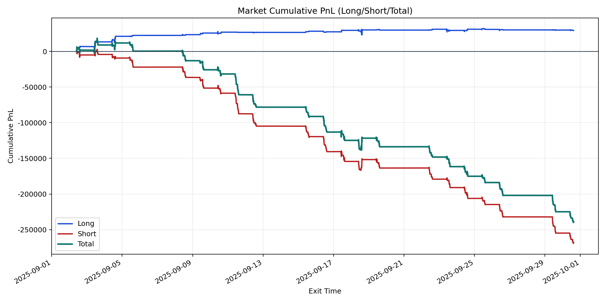
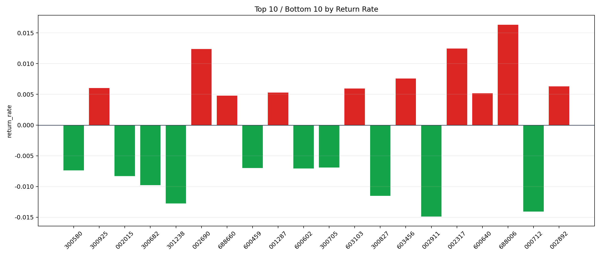

| repo_root | /home/haoranyou/data/output/alpha0.4_1w_5s_3ticks_index_filter/index_weights_1000 |
|---|---|
| period_months | 1 |
| period_label | 2025-09-02_to_2025-09-30 |
| start_time | 2025-09-02 09:51:22 |
| end_time | 2025-09-30 14:59:55 |
| n_trades | 31051 |
| n_symbols | 355 |
| total_pnl | -239035.6345499998 |
| long_total_pnl | 29252.14970000002 |
| short_total_pnl | -268287.7842499998 |
| total_entry_notional | 293549022.0 |
| long_entry_notional | 42750724.0 |
| short_entry_notional | 250798298.0 |
| total_return_rate | -0.0008142954553941584 |
| long_return_rate | 0.0006842492234751397 |
| short_return_rate | -0.0010697352669036047 |
| top_symbols_by_return | ["688006", "002317", "002690", "603456", "002892", "300925", "603103", "001287", "600640", "688660"] |
| bottom_symbols_by_return | ["002911", "000712", "301238", "300827", "300682", "002015", "300580", "600602", "600459", "300705"] |

